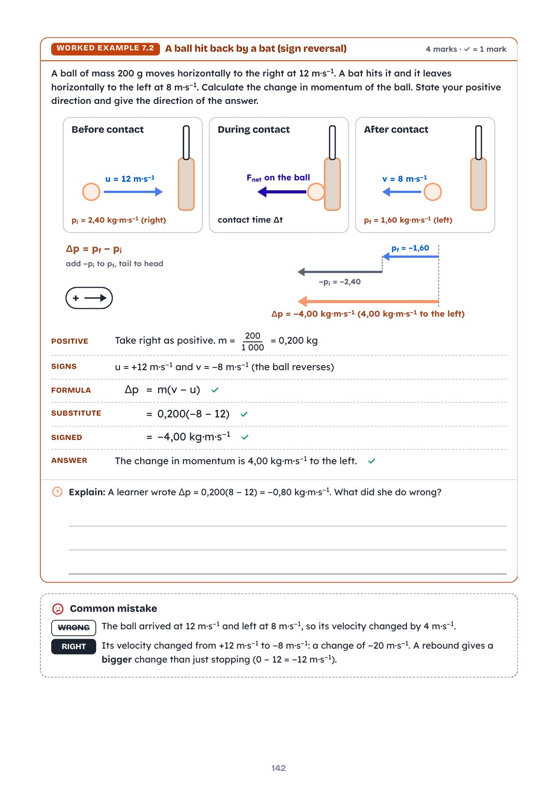
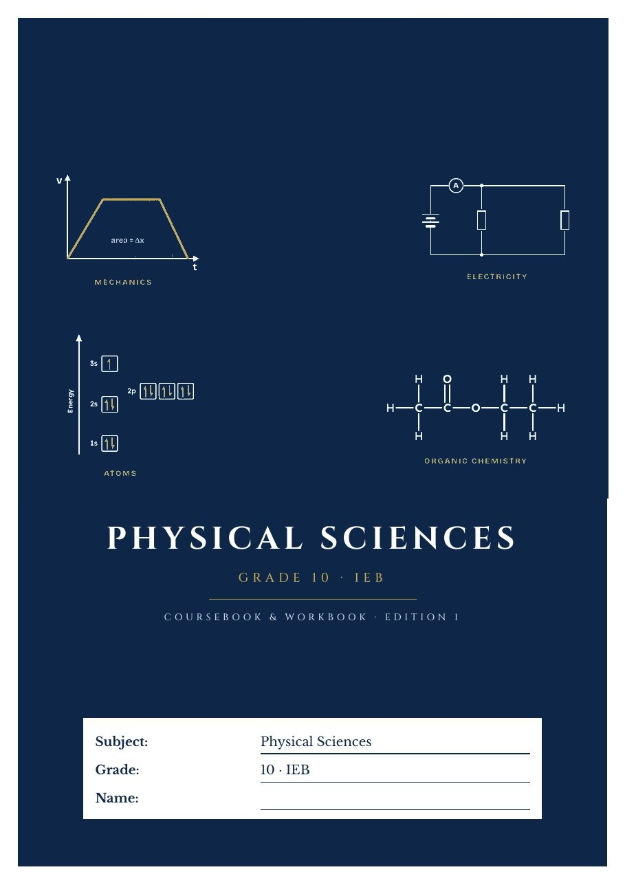

A 20-minute talk for teachers.
Noel Robert, Physical Sciences teacher
Press → or Space, or tap the right edge, to move on.
Is it any good?
Two pages on momentum. AI made both. Which would you give your class?
- Momentum = mass × velocity
- Heavier things have more momentum
- Fun fact: a truck has lots of momentum!
- Remember: practice makes perfect!
Mock-up of a typical one-prompt result

Worked example 7.2, coursebook page 142
Decide, then click
Page A is friendly and empty: there is nothing for a pupil to do. Page B uses the exam board's wording, sets out a worked example like a memo, and names a mistake pupils really make.
Is it any good?
Same AI. The difference was the teacher.
- The AI has read almost everything, so it can make something generic in seconds.
- It does not know your pupils, your curriculum or your exam. You do.
- This talk is about getting that knowledge onto the page.
Will it harm learning?
Nearly a thousand pupils practised maths with AI. Then the AI was taken away.
Three groups of high-school pupils in Türkiye: no AI, an ordinary chatbot, and a tutor chatbot that gave hints, not answers. Every number is compared with the no-AI group.
Decide, then click
- Practice soared. Learning sank. The chatbot group scored 17% lower in the exam than pupils who never had AI.
- The hint-only group did about the same as no AI. Hints keep the thinking with the pupil.
Source: Bastani and others, 2025, PNAS
Will it harm learning?
Attempt first, then one hint, then solve one alone on paper.
- 1Attempt it first.
- 2Name where you are stuck.
- 3Ask for one hint.
- 4Check the reply.
- 5Close the AI and solve a fresh one alone, on paper.
The measure that counts is what a pupil can do with the AI switched off.
ILLUSTRATION A hint, not an answer.
What makes the output good?
There is no prompt. There is a page of rules: my lens.
The AI forgets everything when a chat ends. So I wrote my rules down once, and it reads that page before every job.
What makes the output good?
One test for every page: what must the pupil recall, think about or produce?
Wow 1 · A first job
One worked example became three questions and a memo. Every number was right. Six other things were not.

I checked every answer. The physics and arithmetic were right. Then I changed:
- Units.
m.s^-1became m·s⁻¹, as the book writes it. - No diagrams. The before-and-after strip is half of what makes the page teach.
- No Common mistake box. The page ends with one.
- Three rebounds. I made question 3 a ball that stops, for the contrast.
- One muddled line. "Speed change" where it meant velocity.
- "He" and "she" for one learner. Both became the learner.
It did the typing. I did the judging.
Wow 2 · Moderating my marking REAL SCRIPT, ANONYMISED
My red pen first, then a green moderator's pen. I decide every mark.


- Red: I mark every script myself.
- Green: AI moderates it, written straight onto the scan.
- A tick where it agrees. A new mark and the reason where it doesn't.
- I check every green change. I still decide every mark.
Name, class and school hidden. Only question marks show.
The marks, analysed INVENTED CLASS
Click a bar for more.
An invented class of 24 pupils, one 135-mark paper.
- Whole paper: who needs help first.
- Question by question: what to reteach, not just who.
Esc or × to go back to the script
Wow 3 · The study coach
The coach asks one question, then hands the pen back.
I = V/R = 10/12 = 0,83 A
- 1Says what is right first
- 2Names the first gap only, with one question
- 3Talks in memo marks and names its source
- 4Ends every session on paper
A made-up attempt. Tested only with made-up attempts so far, not with classes.
Scaled up
The same lens, at book size and on video.

- I decidedThe design rules, the level, the exact curriculum wording
- The AIBuilt the pages
- IChecked them
Grade 7 lesson videos, in our own words. No adverts, nothing "up next", the book's words, and it ends by sending pupils to the page.
Is it safe?
AI goes wrong in four ways. So I keep four rules.
What goes wrong
My rules
- Nothing goes live without me. The AI drafts; I check and approve every page.
- Pupil data stays in the school's own systems. Marks files stay put; the study coach never asks for a name.
- Demos use invented data. No real pupil, class or mark appears in this talk.
- Check everything against what you know. That goes for teachers too.
Before you start, check your school's own rules on AI.
Start Monday
Three rungs, each a fine place to stop. Here are the words for the first.

Noel Robert. Free to share. Not for sale, and not to be changed.